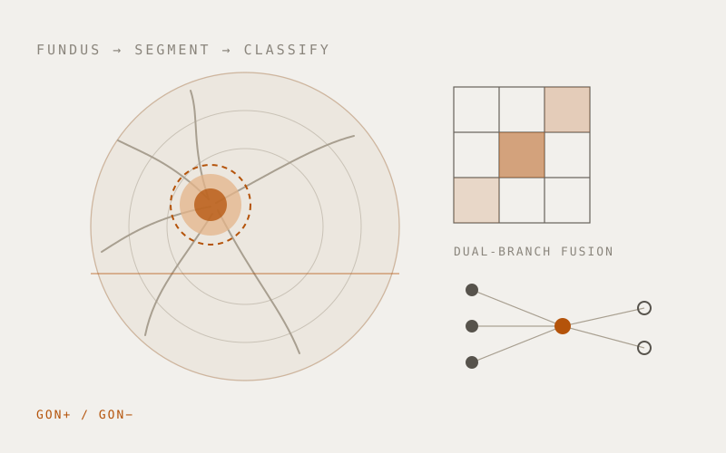
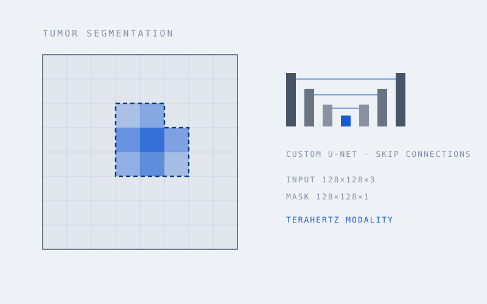
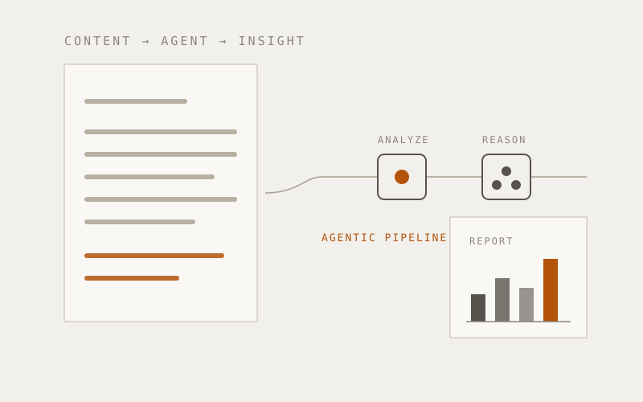
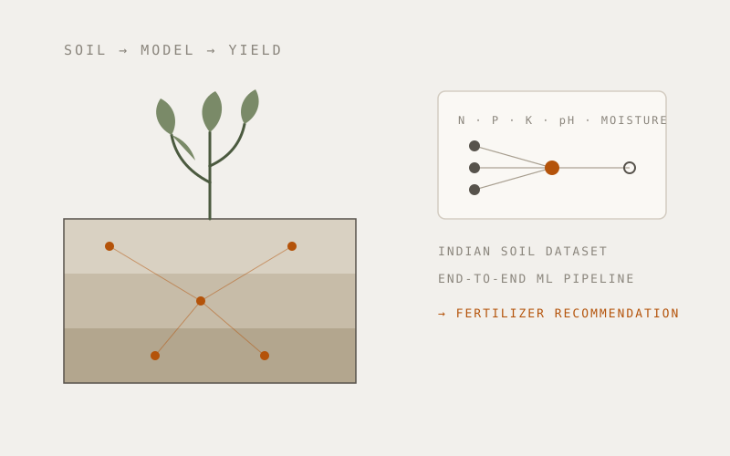

GlaucFusion: Advancing Glaucoma Diagnosis with Vision Transformers
Developing a dual-branch vision transformer framework for more accurate glaucoma detection.
Machine Learning Engineer · Bengaluru, India
Currently building image segmentation pipelines for multi-temporal satellite imagery at AnyTechPros. Previously: medical imaging research at MANIT Bhopal and Samsung PRISM. I care about AI that ships and serves people — from glaucoma screening to cancer image segmentation to agentic tools.
I'm a third-year B.Tech student at IIITDM Kurnool who spends most of his time outside the mechanical engineering curriculum — training vision models, reading papers, and building tools with real-world stakes.
My work so far sits at the intersection of deep learning and imaging: vision transformers for glaucoma diagnosis, custom U-Nets for terahertz breast-cancer segmentation, satellite imagery pipelines for environmental monitoring, and agentic AI systems. I've done four internships across ML research, backend engineering, and applied computer vision.


A dual-branch vision transformer framework for segmentation-aware glaucoma diagnosis. Fuses an encoder-only mask transformer with fine-tuned DINOv2 classifiers through accuracy-weighted soft fusion, so predictions attend to clinically relevant regions instead of spurious features.
View code on GitHub↗
A custom U-Net for real-time tumor segmentation in terahertz medical imagery — a modality where labeled data is scarce and boundary precision matters for surgical margins. Built as the lead project of my Samsung PRISM internship.
View code on GitHub↗
Smart Content Reporting Intelligence for Blogging Engagement — an agentic AI pipeline that automates content analysis and report generation, surfacing actionable engagement insights for writers.
View code on GitHub↗
An end-to-end ML pipeline over an Indian soil dataset that analyzes soil composition and recommends optimized fertilizer use — applied ML for agriculture, where small yield gains compound at scale.
View code on GitHub↗Researching and developing image segmentation pipelines for multi-temporal satellite imagery — implementing novel preprocessing and segmentation methods for satellite data streams, deployed at practical scale.
Research toward GlaucFusion: developed, trained, and evaluated vision transformer models on ophthalmology datasets for glaucoma detection in eye images.
Primary developer for the Bluestock IPO web application — designed, implemented, and deployed APIs for real-time financial data and user management.
Led the terahertz breast-cancer image segmentation project — built a real-time custom U-Net model for segmenting terahertz medical imagery.
Developing a dual-branch vision transformer framework for more accurate glaucoma detection.
How AI agents can be leveraged to solve real-world problems and create positive change.
Internships or full-time, remote or hybrid. If you're hiring — or just want to talk about medical imaging and vision models — my inbox is open.